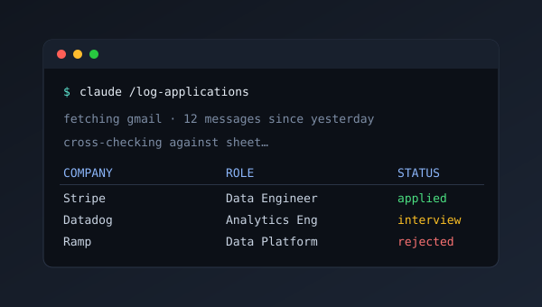

Job Application Logger
A job search means keeping a spreadsheet, and maintaining one by hand is its own small job. This tool builds it from the mail instead: one command pulls the job-application email that arrived since the last run, classifies each message in-session with Claude, cross-checks it against the sheet, and prints a table. Nothing reaches the sheet until you approve it, and the Gmail label applied afterward is what keeps the next run from logging the same message twice. The judging happens in the Claude Code session, so there is no API key and no metered inference.